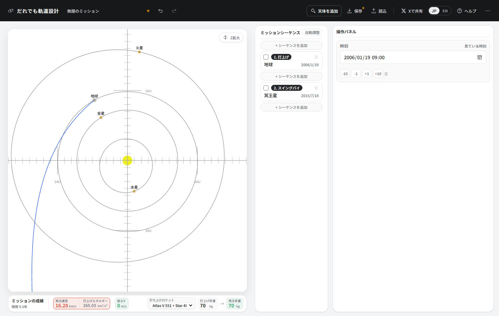
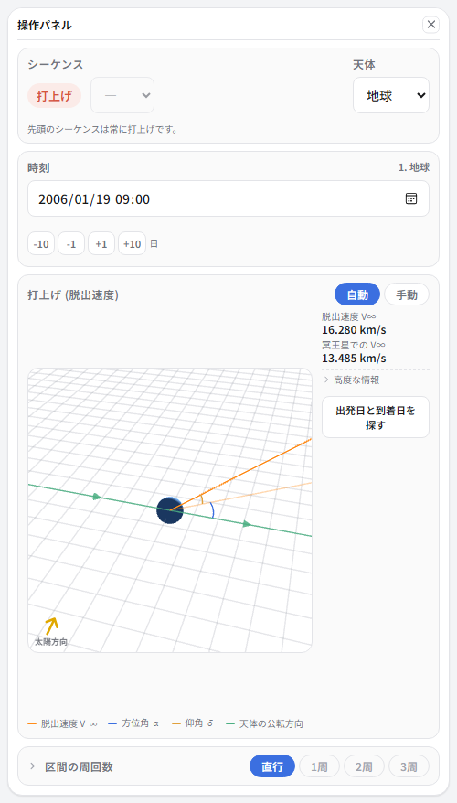
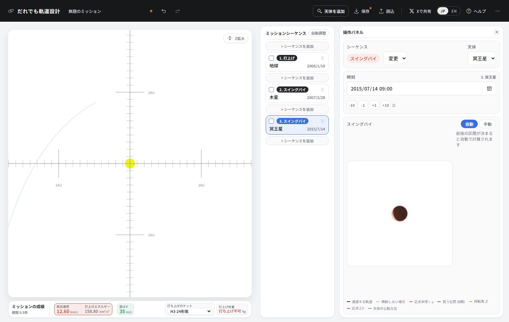
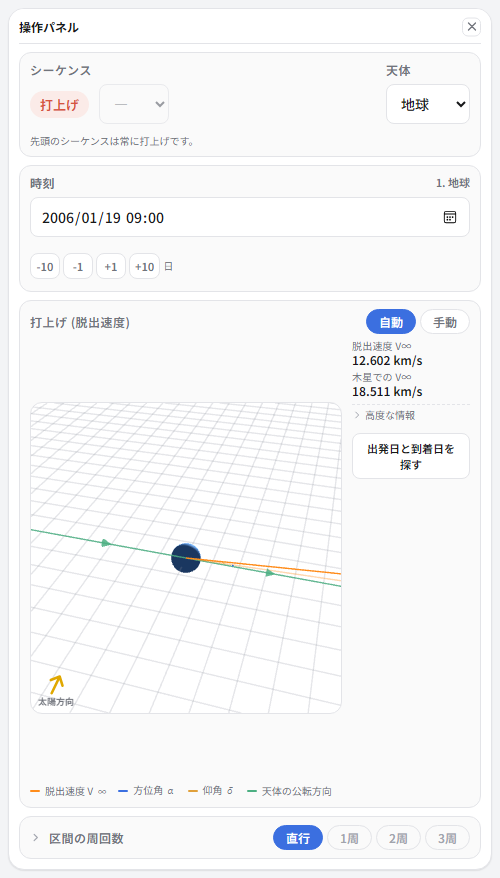
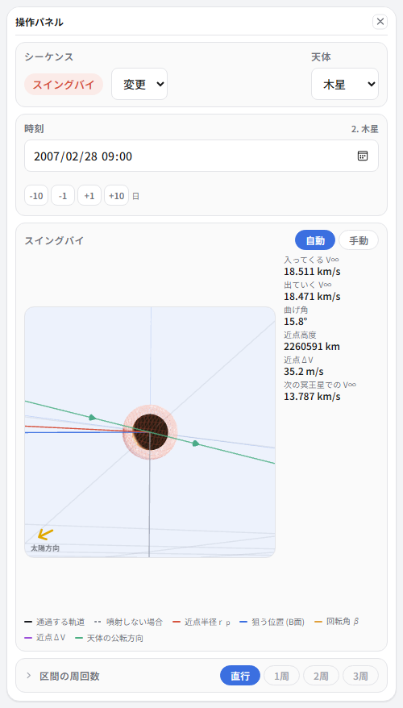
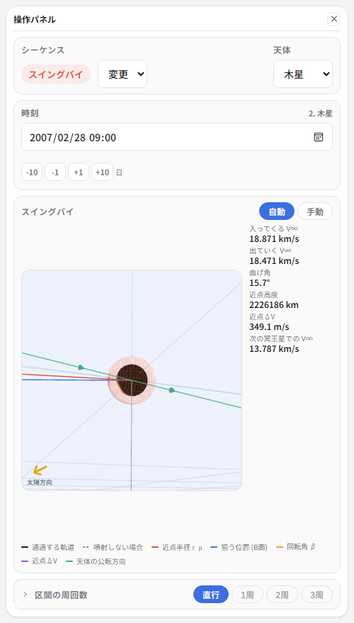
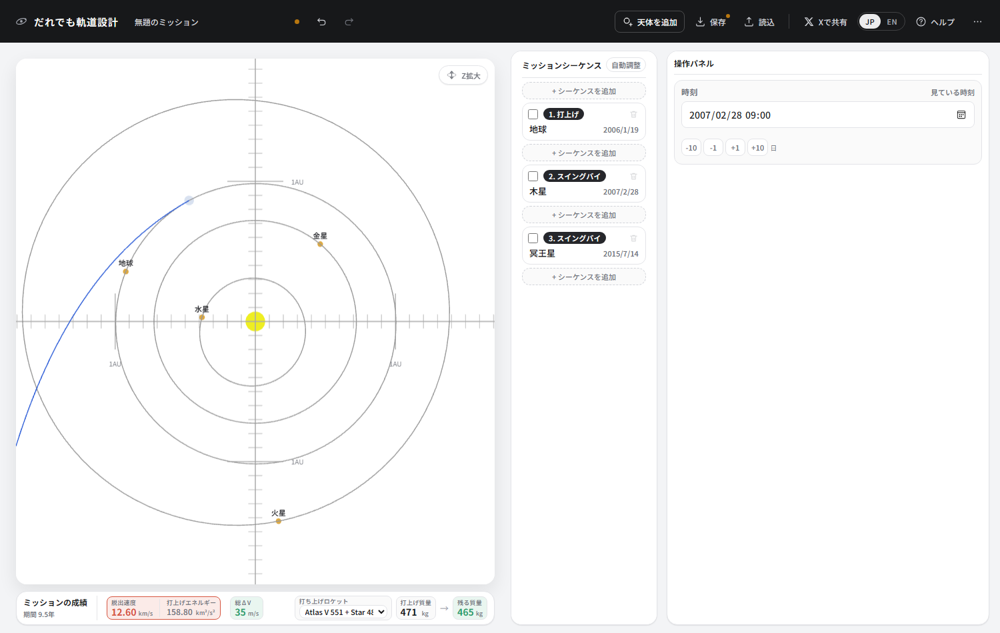

③ 木星に押してもらって冥王星へ
2006年に打ち上げられたニューホライズンズは、9年半かけて冥王星に到達しました。 鍵は打上げの13か月後にすれ違った木星です。 節を3つ並べるだけの、いちばん簡単なチュートリアルですが、 木星の重力がどれほど桁違いかがはっきり出ます。
ここで覚えること
- 木星のスイングバイの威力 (金星や地球とは桁が違う)
- 打上げロケットを選ぶ
- 打上げ窓が狭いということ
まず、木星を使わずに行ってみる
シーケンスを2つ作り、1つ目は地球、2つ目を冥王星のスイングバイ (通り過ぎるだけ) にします。 日付はニューホライズンズと同じ、2006/01/19 出発、2015/07/14 到着。
成績バーの打ち上げロケットを「Atlas V 551 + Star 48B」にしてください。 ニューホライズンズが実際に使った構成です。


70 kg。カメラ1台も載りません。 冥王星は遠いというだけでなく、速く着こうとするほど高くつくのです。 同じ9年半で着くには、これだけのエネルギーが要ります。
木星を挟む
-
作り直して、シーケンスを3つ。すべてニューホライズンズの実際の日付です。
番号 種別 天体 日付 1 打上げ 地球 2006/01/19 2 スイングバイ 木星 2007/02/28 3 スイングバイ 冥王星 2015/07/14


70 kg が 471 kg になりました。約6.7倍です。 実際のニューホライズンズは478 kg。ほぼそのままの数字が出ています。
木星は桁が違う

注目してほしいのは近点高度 2260591 km — 226万キロです。 地球から月までの距離 (38万km) の6倍も離れたところを通っています。
チュートリアル②の金星は5681 km、④で使う地球は1万6000 km。 それに比べて226万kmという「かすりもしない」距離を通りながら、 それでも15.8度曲げられている。木星の重力とはそういうものです。
| 天体 | 近点高度 | 曲げ角 | チュートリアル |
|---|---|---|---|
| 金星 | 5,681 km | 34.0° | ② |
| 地球 | 16,000 km | 63.3° | ⑤ |
| 木星 | 2,260,591 km | 15.8° | ③ (このページ) |
曲げ角だけを見ると木星が小さく見えますが、意味が違います。 木星は速度そのものを大きく増やすのです。 木星に 18.511 km/s で近づき、18.471 km/s で離れていく — 木星から見れば速さは変わっていません。 ところが木星自身が太陽のまわりを13 km/sで動いているので、 太陽から見た速度はここで大きく跳ね上がります。 冥王星に 13.787 km/s という猛烈な速さで着くのは、そのおかげです。
近点ΔVは 35.2 m/s。ほとんど無料です。 226万km離れたところを通るだけで、探査機の質量が6.7倍になる勘定になります。
窓は狭い
打上げの日付を20日ずらして、2006/02/08 にしてみてください。 そのあと木星の節を選び直します。

たった20日で、燃料の要求が10倍になりました。 さらにずらすと、地球・木星・冥王星が一直線に近い並びから外れていき、 木星に「ついでに」寄ることができなくなります。
| 打上げをずらす | 打上げエネルギー | 近点ΔV |
|---|---|---|
| -40日 | 267.1 | 906 m/s |
| -20日 | 189.9 | 380 m/s |
| そのまま | 158.8 | 35 m/s |
| +20日 | 195.5 | 349 m/s |
| +40日 | 330.2 | 634 m/s |
実際のニューホライズンズの打上げ窓は2006年1月から2月のわずか3週間ほどで、 強風と地上の停電で2度延期されたあと、3度目に飛びました。 この窓を逃していれば、木星を使えないぶん到着は数年遅れていました。
できあがり

| 項目 | この設計 | 実際のニューホライズンズ |
|---|---|---|
| 打上げ | 2006/01/19 | 2006/01/19 |
| 打上げエネルギー C3 | 158.80 km²/s² | 157.8 km²/s² |
| 打ち上げられる質量 | 471 kg | 478 kg |
| 木星スイングバイ | 2007/02/28 | 2007/02/28 |
| 木星からの距離 | 226万 km | 230万 km |
| 冥王星到着 | 2015/07/14 | 2015/07/14 |
| 冥王星での相対速度 | 13.787 km/s | 13.8 km/s |
日付を3つ入れてロケットを選んだだけで、実機の数字がそのまま出ました。 軌道設計というのは、つまるところ「いつ、どこを通るか」を決める仕事なのだ、 ということがよく分かる例です。